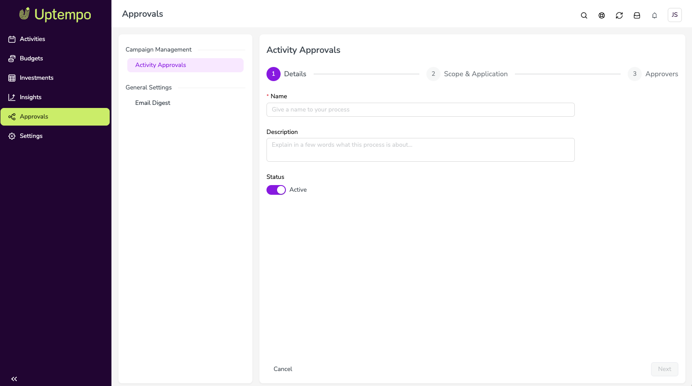

Set up activity approval processes
An approval process defines which activity types need approval, and who approves them. As an admin, you create and manage approval processes from the Approvals page.
Before you begin
Activity approvals must be enabled in your Uptempo instance. This feature is in Preview; contact your Customer Success Manager to enable it.
You must have administrator access to Campaign Management.
If you plan to use a submitter-to-approver mapping, collect the email address of each submitter, their approvers, and the user who acts as the default admin. Approvers must be able to edit the activities they approve.
How approval processes work
Process scope
Each approval process covers one or more activity types. One process can cover several activity types, but each activity type belongs to only one active process. When you select activity types for a process, types already covered by another active process can't be selected, and Uptempo shows which process covers them.
Only activities whose type is covered by an active process can be submitted for approval.
Approver sources
Each process uses one of two approver sources:
- Submitter-to-approver mapping
You upload a CSV file that maps each submitter's email to one or more approver emails, plus exactly one default admin. Uptempo assigns approvers automatically based on who submits the request. Submitters can't change their approvers.
- Selected by submitter
Submitters choose one approver when they submit. Only users who can edit the activity can be selected. No file is needed.
Default admin
The default admin is the fallback approver for a process that uses a submitter-to-approver mapping. Uptempo routes a request to the default admin when:
The submitter isn't listed in the mapping file.
None of the submitter's mapped approvers can edit the activity.
Mapping file checks
When you upload a submitter-to-approver mapping file, Uptempo checks it for problems:
- Errors
A missing default admin, or the same submitter listed more than once. You can't save the file or continue until you fix these and upload the file again.
- Warnings
Unknown email addresses or inactive users. You can continue, but fix these to make sure requests reach the right people.
- Access warnings
Approvers who can't edit the activities of the submitters they're mapped to. Uptempo lists each affected approver. You can upload a corrected file, or continue; if you continue, requests from those submitters go to the default admin.
Changes to existing processes
Changes to a process or its submitter-to-approver mapping apply to new requests only. Requests already in progress keep the approvers assigned when they were submitted.
Uploading a new mapping file merges it into the current mapping: new submitters are added, and submitters with changed approvers are updated.
Create an approval process
Create an approval process
In the navigation menu, click Approvals.
On the Approvals page, click
 Open approval settings.
Open approval settings.In the settings menu, under Campaign Management, click Activity Approvals, then click Create a process.
On the Details step:
Enter a Name for the process (required).
Optional: Enter a Description.
Use the Status toggle to set the process to Active or inactive. Inactive processes don't accept new submissions.
Click Next.

On the Scope & Application step, select one or more activity types for the process to cover. Activity types are grouped by activity type group; use the search field to find a type.
On the Approvers step, select an approver source:
Selected by submitter: No further setup is needed.
Submitter-to-approver mapping: Upload a mapping file, as described in Upload a submitter-to-approver mapping.
Click Save.

The process is saved and appears in the approval process list. If the process is active, users can now submit activities of the covered types for approval.
Upload a submitter-to-approver mapping
Upload a submitter-to-approver mapping
On the Approvers step of a process, select Submitter-to-approver mapping.
Click Download template to download the CSV template.
Fill in the template:
Add one row per submitter, with the submitter's email address.
Add one or more approver email addresses for each submitter.
Name exactly one default admin, as shown in the template.
Click Upload and select your completed file.
Review the results of the file checks:
If Uptempo shows errors, fix them in your file and upload it again.
If Uptempo shows warnings or access warnings, review them. Upload a corrected file, or continue.
Click Save.
The mapping is saved. New requests for this process are routed to the approvers in the file.
Edit an approval process
Edit an approval process
On the Approvals page, click
Open approval settings, then click Activity Approvals.In the approval process list, click
 Edit on the process you want to change.
Edit on the process you want to change.Go directly to the Details, Scope & Application, or Approvers step and make your changes.
Click Save. Save is available only when something has changed and all required fields are valid.
Your changes apply to new requests. Requests already in progress aren't affected.
Deactivate an approval process
When you deactivate a process, users can no longer submit activities for approval for the activity types it covers. Requests already in progress continue, and approvers can still decide on them.
Deactivate an approval process
On the Approvals page, click
Open approval settings, then click Activity Approvals.In the approval process list, click
Edit on the process you want to deactivate.On the Details step, set the process to Inactive.
Click Save.
The process is deactivated. Its activity types can now be added to another active process.